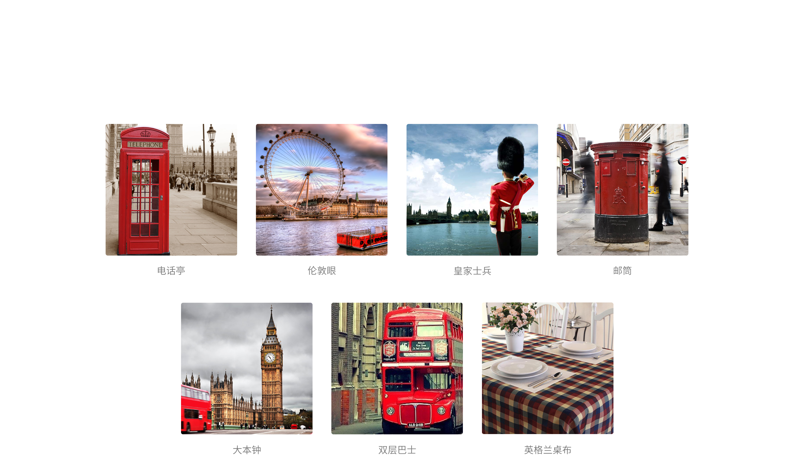
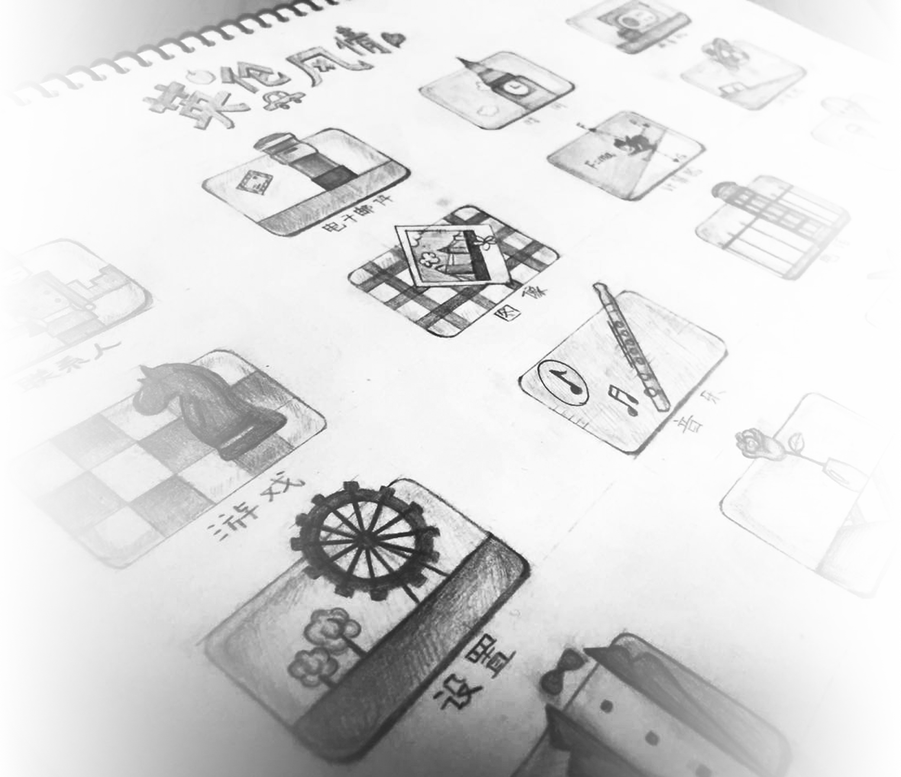
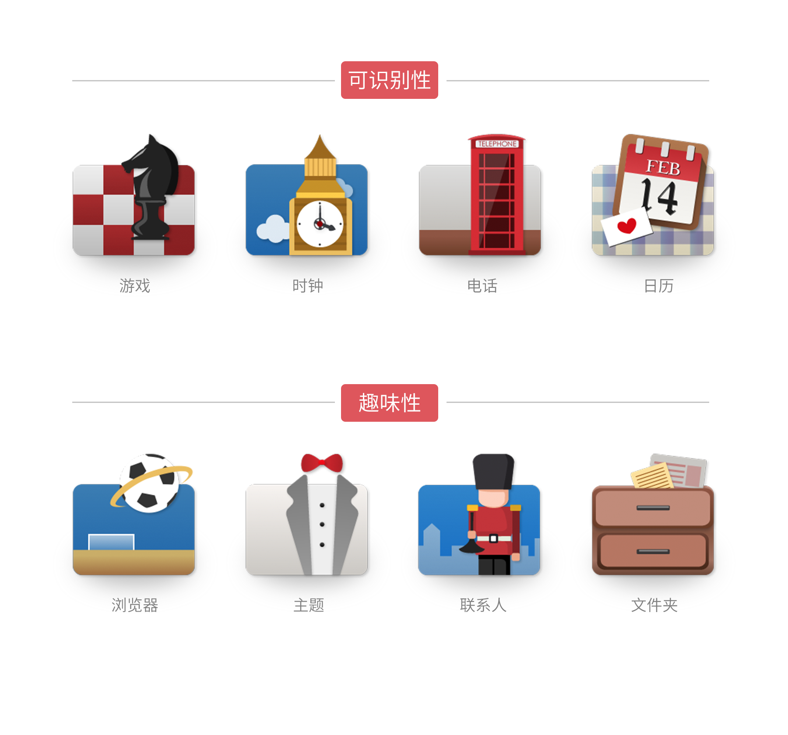
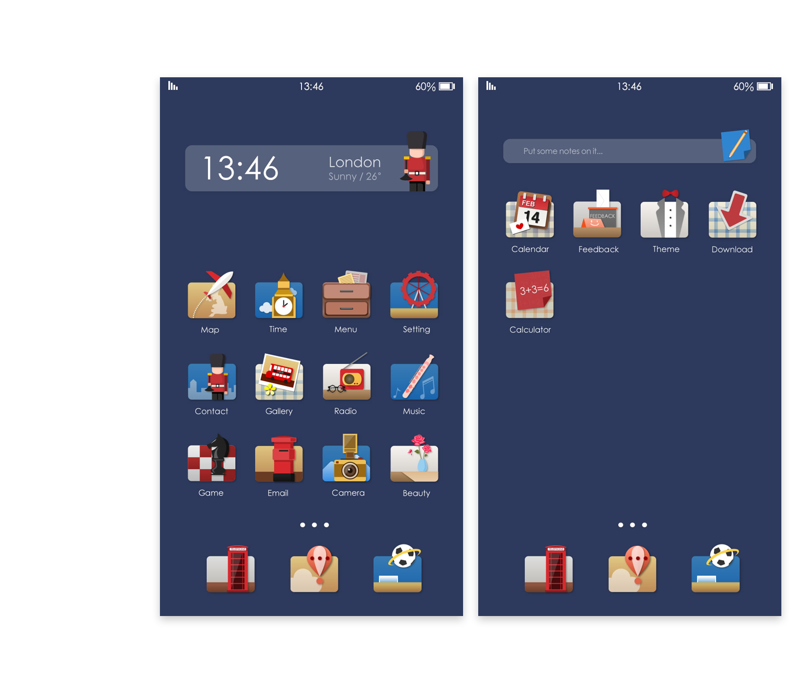

14年的暑假，在学校的图书馆中我读到了一本描述搜狐新闻客户端设计过程的书籍：《设计之下》。
这本书虽然语言朴素但却满满都是干货：让我第一次完整的了解了App设计的流程，第一次对用户
体验有了新的感触和思考，第一次对交互设计有了模糊的认知。
有幸在15年的四月份，来到了搜狐新闻客户端UED实习，在实习期间，我完成了3个h5页面和多个banner的设计，也负责用研的用户反馈搜集和整理。
世界最长3d地画活动的h5设计
搜狐新闻客户端发起的挑战世界最长3d地画的活动，获得了吉尼斯的认证。我参与了活动的h5设计，获得吉尼斯认证证书。

当美成为了主流，丑就成了流行
整个项目时间紧任务重，我积极与市场团队以及技术团队的沟通，保证了信息的传达性。
在调研和以及和市场团队的交流中，我发现主流美观的页面并不能够吸引用户的眼球，那些有特色的，带一点“丑”的设计因为新奇，反而获得更高的关注度。整个视觉风格做了多次修改，最终选择了色彩对比强烈、形象夸张的视觉风格。

弹窗设计
针对搜狐新闻客户端h5页面中的弹窗设计

搜狐新闻h5主题模板设计
为搜狐新闻的市场部制作的几套可以重复使用的活动模板。
选择了适合的h5模板风格，

第三方图标
第三方应用地板目前提供三种.方形、圆角矩形等有规则图标可以直接嵌套在蒙版内.
图标展示
提供系统图标共二十个，第三方图标模板三种.
本套主题已经于2014年2月在搜狐畅游c－lanucher桌面主题上线.
第一个星期的下载量为：8901次,下载排行第三名.

锁屏
除了常规的解锁情况,也要考虑在有未接来电、未看信息等状况下的锁屏情况.